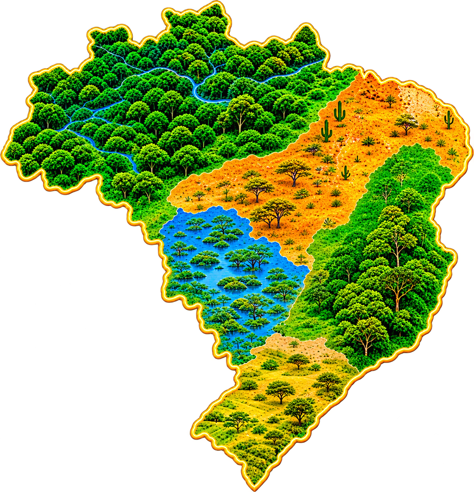
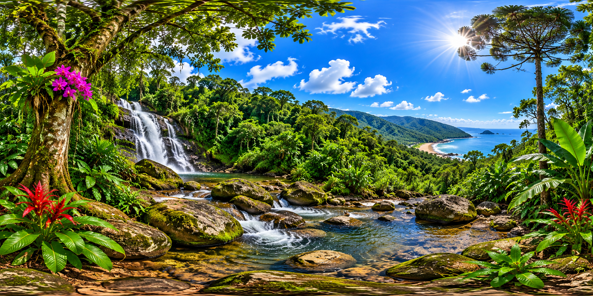

ESCOLHA SEU DESTINO
Toque em um biomaExplore o mapa do Brasil

Explore o mapa, descubra as riquezas naturais de cada bioma e mergulhe em uma jornada educativa e interativa!

Use o computador, toque na tela do celular ou coloque o aparelho em óculos de realidade virtual compatíveis.


